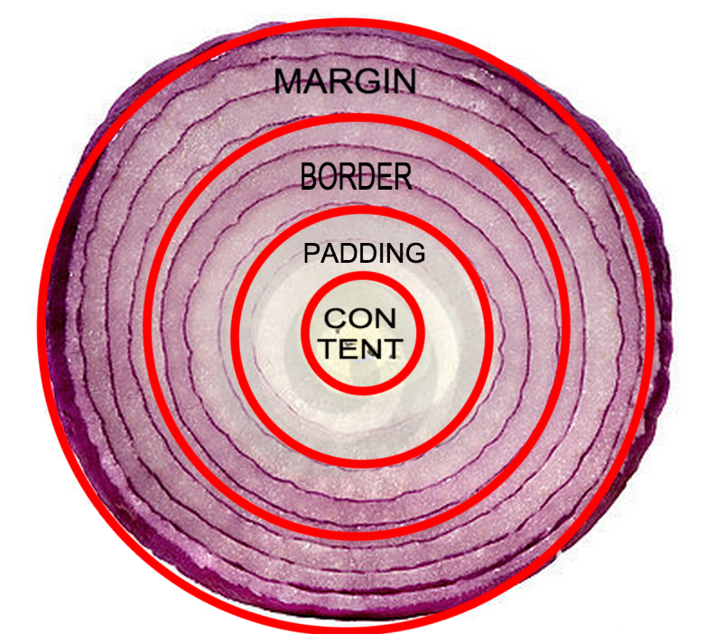

The CSS Box Model
Padding, Border and Margin
Saturday AM, 5 Sept 2015
Elements are like onions; they have layers.
Within the chewy center of the element resides the content. The content can be the text inside of a paragraph tag, data inside a table tag, an image inside of and image tag... It's the information. The gooey, gutsy stuff on the inside.
The border is what keeps all the guts inside the element. Every element has a border control that keeps all the content inside. Nothing escapes, nobody gets out. All of the content that is put into an element will stay inside the border. It's like drawing a circle of salt around a slug. That slug is not going anywhere. It's always there, and can be exposed by setting the border attribute to anything other than nothing.
Padding is a squishy cushion between the content and the border. It's great for pushing content around inside the element. Padding tells the content to stay a certain distance away from the border, which is especially useful when you want to center stuff. The padding can be adjusted by using padding-top, padding-right, padding-bottom and padding-left. Or it can be set all at once by simply putting padding, and then all the desired values in a list starting with the top and working clockwise around to finish at the left.
Margin is like the inverse of padding. It goes all the way around the outside of the element. Think of it as a bumper, or a forcefield. It's the element's personal space bubble that keeps all the other elements a set distance away. Margin is declared much the same way as padding. Either use margin-top, margin-right, margin-bottom and margin-left, or set values for each side in one fell swoop by listing them in clockwise order starting from the top all the way around to finish with the left.